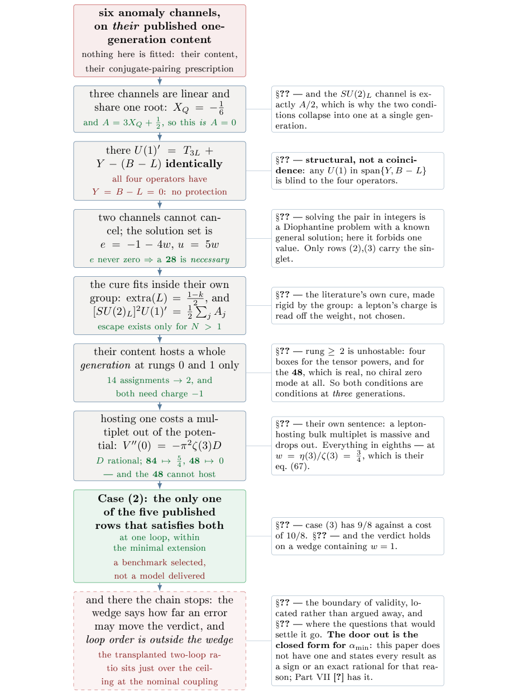
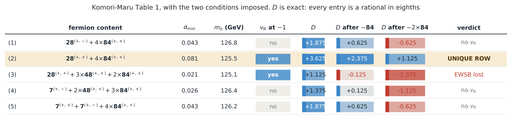
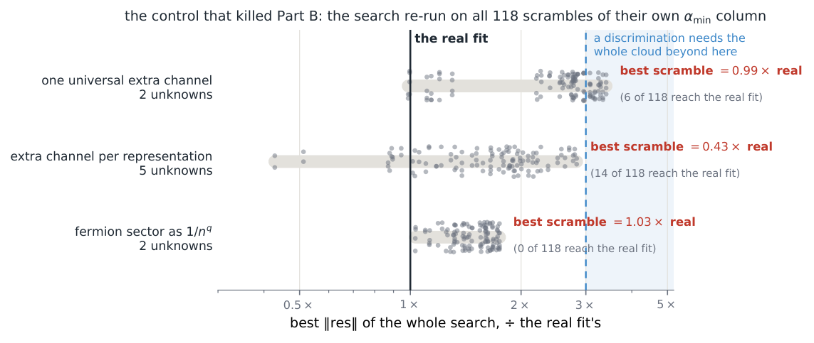
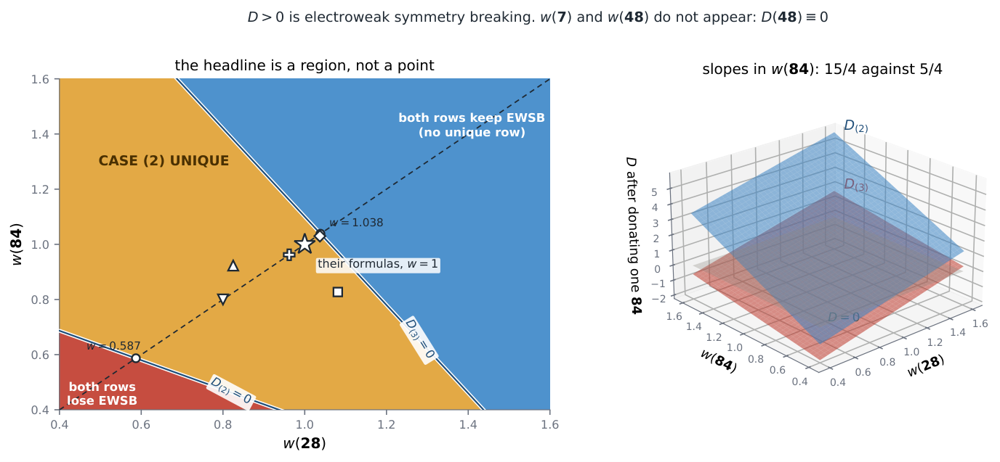
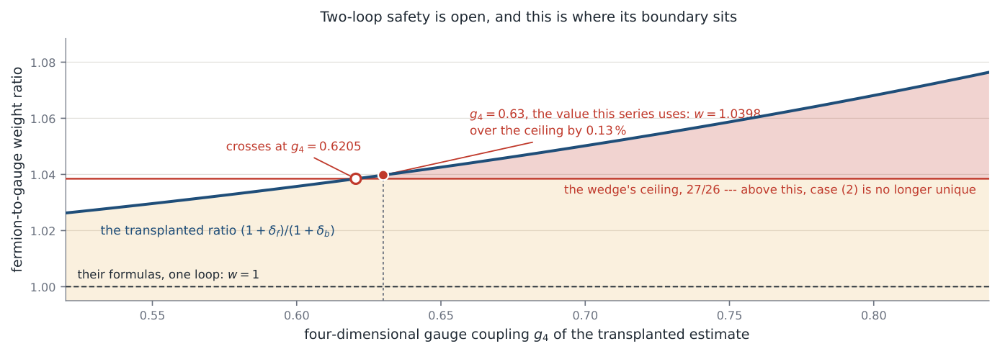
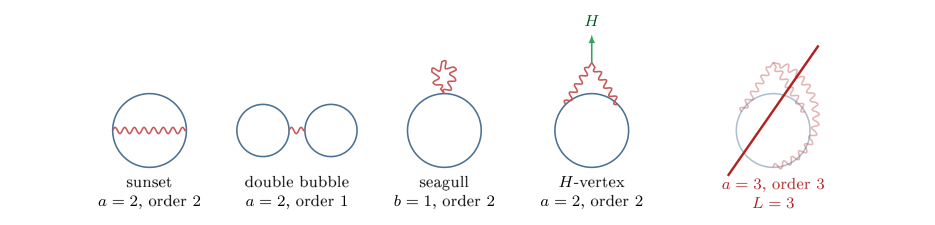

Proton Decay in SU(7) Grand Gauge-Higgs Unification: An Obstruction, Its Minimal Escapes, and the One Row of Their Table 1 That Can Pay for Them (Part VI)
At a glance
What the paper contributes
Komori and Maru's six-dimensional SU(7) grand gauge-Higgs model leaves proton decay to future work. Working inside their construction and with their own equations, the paper finds an obstruction, classifies the minimal escapes and selects one row of their Table 1 as the benchmark to compute next; it does not deliver that model.
- An obstruction at one generation. Three anomaly channels force XQ = −1/6, where U(1)′ = T3L + Y − (B − L) identically and the four dimension-6 |ΔB| = 1 operators are neutral; two further channels require a right-handed neutrino of charge −1, which only a 28 supplies (rows (2) and (3)).
- The escapes, inside their own group. A ladder extra(L) = (1 − k)/2 and the identity [SU(2)L]²U(1)′ = ½ Σj Aj (Proposition 1): fourteen anomaly-free three-generation assignments, two of which fit their tensors. The 48 cannot host a generation, because under diagonal ±1 parities a real representation is vector-like (Proposition 2, a specialisation of Gogoladze–Mimura–Nandi).
- The bill, in eighths. V″(0) = −π²ζ(3)D with D rational per multiplet (84(+,+) ↦ 5/4, 48(+,+) ↦ 0): only case (2) satisfies both necessary conditions, at one-loop curvature.
- A selection rule in closed form. Protection fails iff qφ = |Aj|/n (Proposition 3); qφ = 3/2 protects for every half-integer brane-quark charge.
- The instrument, audited. Their αmin column is not reproduced (an open question, not a defect claim); the verdict holds on a wedge of multiplicative repairs, and two-loop safety is left open.
🚀 Start here: Proposition 1: the left-handed SU(2) anomaly of U(1)′ is half the sum of the proton-operator charges.
Main results:
- Proposition 1: the left-handed SU(2) anomaly of U(1)′ is half the sum of the proton-operator charges
- Proposition 2: under diagonal ±1 parities a real representation furnishes no chiral generation
- Proposition 3: protection fails iff qφ = |Aⱼ|/n: a set with a maximum, so protection is a half-line
🗺️ Map of the results (click a box to go to it)
Dependencies in the written proof: an arrow A → B means that this proof of B uses A. Every result rests on its written proof; the tags record what was checked besides, and each statement's “Evidence & scope” block says how far. The colour of a box is its strongest tag, in the order above; the tags in the box give the rest. Boxes with a thick border are the main results; click a box to read the statement.
📐 Setting (copied from the paper, §2)
The model of [ 1 ] is six-dimensional \(SU(7)\) on \(S^1/{\mathbb {Z}}_2\times S^1/{\mathbb {Z}}_2\). Its orbifold parities are their eqs. (11)–(13),
the Standard-Model fermions are localised at fixed points (their eqs. (43)–(47)), and the bulk carries 6D Dirac fermions in \(\mathbf{7}\), \(\mathbf{28}\), \(\mathbf{48}\) and \(\mathbf{84}\) whose only role is the one-loop Higgs potential. Their Wilson-line vacuum leaves \(SU(3)_C\times U(1)_{\rm em}\) together with one extra abelian factor, their eq. (79),
which they say must be broken by a \(U(1)'\)-charged 4D scalar on a fixed point. (§3) Write \(X_Q\) for the \(U(1)'\) charge of the brane quark doublet. […] The four dimension-6 \(|\Delta B|=1\) operators then carry a single \(U(1)'\) charge
(§4) \(\mathrm{extra}(L)=\frac{1-k}{2}\) — a ladder spaced by \(1/2\) and indexed by how many index-7 boxes the multiplet carries. (§6) A vacuum expectation value of charge \(q_\varphi \) does not destroy the symmetry: it breaks \(U(1)'\) to a discrete subgroup, and an operator of charge \(A\) can be dressed with \(\langle \varphi \rangle \) insertions only if \(A/q_\varphi \in {\mathbb {Z}}\).
4 A ladder inside their own \(SU(7)\)
For \(N\) generations with proton-operator charges \(A_j=3a_j+l_j\),
🆕 Classical and new: the paper lists it among what is ours (§9); at N = 1 it is the entry 3X_Q/2 + 1/4 = A/2 of the anomaly table; the family-dependent cure it mirrors is Lee–Ma [FamilyU1].
↳ Used in: Proposition 3
🖼️ Figure 1

The chain, and it is one chain: every statement in this paper descends from the six anomaly channels evaluated on [ 1 ] ’s own content. Left, the thread; right, what each link buys and where it is done. Read top-down it is an obstruction (the first three links, which depend on no extension of ours), then a classification of the escapes (the next two, which assume three generations and their inventory), then a benchmark (the next two). The green box selects the row worth computing in full; it does not compute it. The dashed box is not a link but the edge of the chain.
🛡️ Evidence & scope
Program: the ladder extra(L) = (1−k)/2, the identity summed state by state over N generations, the 14 anomaly-free assignments. scripts/su7_family_u1.py
Program: the 14 assignments re-derived by an independent path, and the two that fit their tensors. scripts/su7_realisable.py
Program: the six anomaly channels on the published one-generation content (and a Sage re-derivation, per §3). scripts/su7_anomaly_channels.py
Let the orbifold parities \(P_5,P_5'\) act diagonally on the indices of the fundamental, so that a component of a bulk multiplet survives in the multiplet of parities \((\eta ,\eta ')\) iff \(P_5P_5'=\eta \eta '\) and then carries \(4\)D chirality \(-\eta \, P_5\) (their eqs. (37)–(40)). Then for a real representation the surviving spectrum is vector-like, with no chiral state at either choice of \((\eta ,\eta ')\).
🆕 Classical and new: not claimed as new: that adjoint matter is vector-like is stated as well known by Gogoladze–Mimura–Nandi [GMN], who cure it with a Z₃ projection; the paper claims the specialisation to the ±1 diagonal parities, the counts and the chiral controls (§9).
↳ Not used by another result of the paper.
For the adjoint \(\mathbf{7}\otimes \mathbf{\bar7}-\mathbf{1}\) the conjugate of the component \((i,\bar\jmath )\) is \((j,\bar\imath )\), which lies in the same multiplet. Since the parities are diagonal, \(P_5P_5'(j,\bar\imath )=p_jp_i=P_5P_5'(i,\bar\jmath )\) and \(P_5(j,\bar\imath )=P_{5,j}P_{5,i}=P_5(i,\bar\jmath )\): the two survive together and with the same chirality. In an all-left-handed convention the two surviving Weyl fields transform in conjugate gauge representations and therefore admit a gauge-invariant Dirac mass — and their own prescription, a conjugate fixed-point fermion against each unwanted zero mode, supplies one. The argument uses no property of the Wilson line and none of the particular values of these parities — but it does use that they are \(\pm 1\) and diagonal, which is what makes the projection commute with conjugation, and that hypothesis is not free. A \({\mathbb {Z}}_3\) projection has complex eigenvalues, breaks the pairing, and is precisely how the literature obtains chiral families from an adjoint [ 13 ] . Their eqs. (37)–(40) are \({\mathbb {Z}}_2\), so that escape is closed in their model and not in general. □
🛡️ Evidence & scope
Program: the 48 at both parities: 18 of 18 and 24 of 24 surviving states paired with their conjugates; control: the 28 and the 84 leave 10 and 34 unpaired. scripts/su7_adjoint_is_vectorlike.py
Program: the adversarial run that made the proposition necessary: the brane escape priced, every other gate open. scripts/su7_brane_partner.py
6 The selection rule is a half-line, not a tuning
Protection fails at \(q_\varphi \) iff \(q_\varphi =|A_j|/n\) for some generation \(j\) and some integer \(n\ge 1\). That set is countable and has a maximum, so protection is a half-line.
🆕 Classical and new: the mechanism (a residual discrete gauge symmetry from a broken U(1)) is Krauss–Wilczek and Ibáñez–Ross, and the leftover-U(1) breaking in gauge-Higgs unification is Dong [GHK]; the paper claims the closed-form rule for this model (§9).
↳ Not used by another result of the paper.
🖼️ Figure 2

Table 1 of [ 1 ] with the two conditions of this paper imposed. The \(\nu _R\) column is §??: which rows contain a Standard-Model singlet of \(U(1)'\) charge \(-1\), a statement about which components exist and therefore immune to everything in §??. The two \(D\) columns are §??, before and after donating one \(\mathbf{84}^{(+,+)}\) to host the third lepton generation; every entry is an exact rational in eighths, and the coloured bar carries the sign, which is the whole content. Case (3) — the row [ 1 ] single out as particularly interesting — has only \(9/8\) to spend against a cost of \(10/8\). Generated by make_figures_su7.py from the archived su7_repair_space.json.
🖼️ Figure 3

The control that decides §??’s last exclusion. Each candidate repair is a scan — one extra channel \(v\sum _n s^n\cos (c\pi n\alpha )/n^p\) over \(c\in [0.5,40]\), \(p\in \{ 3,\dots ,7\} \), \(s=\pm 1\), or the fermion sector run as \(1/n^q\) — so the control must re-run the whole scan on scrambled data, not re-solve at the winning parameters. Grey dots: the best residual of the full search on each of the \(118\) non-trivial permutations of their own \({\alpha _{\min }}\) column, divided by the real fit’s. A discrimination needs the whole cloud beyond the dashed threshold; every cloud instead straddles \(1\), and on two of the three tests the scrambled data beats the real data. Generated by make_figures_su7.py.
🖼️ Figure 4

Left: the \((w(\mathbf{28}),w(\mathbf{84}))\) plane, coloured by verdict after donating one \(\mathbf{84}^{(+,+)}\). The amber region is where case (2) survives and case (3) does not — the conclusion of this paper. Open marks are every repair the anchor discrepancy has ever been fitted to (§??); all of them lie inside it, and so does \(w=1\). The dashed diagonal carries the interval \((27/46,\, 27/26)=(0.587,\, 1.038)\), which reproduces the \(\lambda _{\rm crit}\) of §?? by a different route. Right: why it is a wedge — \(D\) for the two rows is two planes over the same square, with slopes \(15/4\) and \(5/4\) in \(w(\mathbf{84})\), and the conclusion is the slab between their zero sets. Generated by make_figures_su7.py.
🖼️ Figure 5

Where the boundary of validity of this paper’s verdict sits. The verdict is a statement about one number, the fermion-to-gauge weight ratio \(w\); §?? shows it holds on the wedge, whose ceiling is \(27/26\) (red). What the wedge does not absorb is loop order, so the curve is the transplanted two-loop ratio \((1+\delta _f)/(1+\delta _b)\) built from [ 22 ] ’s gauge half and [ 23 ] ’s fermionic one, against the four-dimensional coupling of those results. It crosses the ceiling at \(g_4=0.6205\), and at the \(g_4=0.63\) this series uses it sits \(0.13\, \% \) above: on the wrong side, and by less than half a per cent. Not drawn, and deliberately: the five row-by-row reweightings the \({\alpha _{\min }}\) column asks for. They are a fit and not a measurement of \(w\), the argument that used them is withdrawn on the previous page, and a figure may not keep making an argument the text has retracted. Drawn by make_figures_su7.py from the archived twoloop_wedge.json.
🖼️ Figure 6

Why the two-loop group factor cannot be cubic. The loop number of a connected vacuum graph is \(L=1+\frac12\sum _k V_k(k-2)\), a function of the valences alone. Background legs (green) are external classical fields and carry weight zero, so they may be attached without limit — including at the three-gluon vertex that [ 24 ] name as the non-abelian frontier, fourth panel, which is a genuine two-loop diagram whose matter trace is nevertheless only \(\mathrm{tr}_R(T^aT^b)\): its new structure lives in the gauge vertex, hence in the integral, not in the group factor. Only matter-gauge vertices carry both weight and a generator, so the trace order \(a+2b\) is bounded by the total weight \(2\). The fifth panel is the cheapest way to a cubic trace and it costs a third loop.
🛡️ Evidence & scope
Program: closed form against a brute scan of every rational p/q ≤ 2 with q ≤ 36, for the 14 assignments: 18 648 values, 0 disagreements. scripts/su7_qphi.py
Program: adversarial audit: qφ = 1/2 fails at every m, qφ = 1 at every odd m, qφ = 3/2 never. scripts/su7_qphi_socratic.py
Program: the residual group and what a second condensing scalar does to it. scripts/su7_residual_group.py
References
- 1
Y. Komori, N. Maru, \(SU(7)\) Grand Gauge-Higgs Unification, NITEP 240, arXiv:2503.04090.
- 2
K. Akamatsu, T. Hirose, N. Maru, A. Nago, Electroweak Symmetry Breaking in Two Higgs Doublet Model from 6D Gauge-Higgs Unification on \(T^2/{\mathbb {Z}}_2\), arXiv:2312.08608.
- 3
N. S. Manton, A new six-dimensional approach to the Weinberg–Salam model, Nucl. Phys. B158 (1979) 141. 🔎 find it
- 4
Y. Hosotani, Phys. Lett. B126 (1983) 309; Ann. Phys. (N.Y.) 190 (1989) 233. 🔎 find it
- 5
S. Weinberg, Phys. Rev. Lett. 43 (1979) 1566. 🔎 find it
- 6
F. Wilczek, A. Zee, Phys. Rev. Lett. 43 (1979) 1571. 🔎 find it
- 7
H.-S. Lee, E. Ma, Gauged \(B-x_iL\) origin of \(R\) parity and its implications, arXiv:1001.0768. The family-dependent cure for a \(B-L\) that cannot forbid the \(B-L\)-conserving proton operators is stated verbatim in its abstract.
- 8
L. M. Krauss, F. Wilczek, Discrete gauge symmetry in continuum theories, Phys. Rev. Lett. 62 (1989) 1221. 🔎 find it
- 9
L. E. Ibáñez, G. G. Ross, Nucl. Phys. B368 (1992) 3. 🔎 find it
- 10
H.-S. Lee, C. Luhn, K. T. Matchev, Discrete gauge symmetries and proton stability in the \(U(1)'\)-extended MSSM, JHEP 07 (2008) 065. 🔎 find it
- 11
A. Aranda, C. D. Carone, Orthogonal \(U(1)\)’s, proton stability and extra dimensions, hep-ph/0012092. 🔎 find it
- 12
K. Kojima, K. Takenaga, T. Yamashita, arXiv:1704.04840 — cited by [ 1 ] as their ref. [13].
- 13
I. Gogoladze, Y. Mimura, S. Nandi, Model building with gauge-Yukawa unification, Phys. Rev. D69 (2004) 075006, hep-ph/0311127 — where the adjoint’s vector-like character is stated as well known and the \(Z_3\) cure is named. 🔎 find it
- 14
S. Raby, Grand Unified Theories, hep-ph/0608183 — cited as a review of the field; the orbifold constructions this paper actually leans on are [ 15 ] .
- 15
A. Kobakhidze, Proton stability in 5D GUTs with orbifold compactification, hep-ph/0108049; A. Hebecker, J. March-Russell, Proton decay signatures of orbifold GUTs, hep-ph/0204037. 🔎 find it
- 16
C. A. Scrucca, M. Serone, L. Silvestrini, hep-ph/0304220 — [ 2 ] ’s own ref. [19].
- 17
N. Maru, arXiv:1903.08359 — where the charged-lepton Yukawa obstruction is called generic in gauge-Higgs unification.
- 18
T. Adachi, N. Maru, Phys. Rev. D98 (2018) 015022, arXiv:1804.06012.
- 19
P. V. Dong, A possible minimal gauge-Higgs unification, arXiv:1105.0541, eqs. (50)–(54), (77), (79).
- 20
C. Q. Geng, R. E. Marshak, Phys. Rev. D39 (1989) 693. 🔎 find it
- 21
D. B. Costa, B. A. Dobrescu, P. J. Fox, General Solution to the \(U(1)\) Anomaly Equations, Phys. Rev. Lett. 123 (2019) 151601, arXiv:1905.13729 — the gravitational and cubic conditions as a Diophantine system, solved in general.
- 22
A. Dumitru, Y. Guo, C. P. Korthals Altes, Phys. Rev. D89 (2014) 016009, arXiv:1305.6846, eq. (66); and Bhattacharya, Gocksch, Korthals Altes, Pisarski, Nucl. Phys. B383 (1992) 497.
- 23
Y. Guo, Q. Du, JHEP 05 (2019) 042, arXiv:1810.13090.
- 24
Y. Hosotani, N. Maru, K. Takenaga, T. Yamashita, Two loop finiteness of Higgs mass and potential in the gauge-Higgs unification, Prog. Theor. Phys. 118 (2007) 1053, arXiv:0709.2844 — the only two-loop Wilson-line potential in this framework, and Abelian.
- 25
C. Marín, Anomaly- and Tadpole-Compatible Fermion Completion of Six-Dimensional \(SU(4)\) Gauge–Higgs Unification, Part I, doi:10.5281/zenodo.21432625.
- 26
C. Marín, Three Gates to a Quark Generation: an exact criterion for which \(SU(4)\) representations contain the Standard Model, Part II, doi:10.5281/zenodo.21432627.
- 27
C. Marín, A Centre-Charge Selection Rule for the Wilson-Line Potential, Part III, doi:10.5281/zenodo.21438226.
- 28
C. Marín, Schur Functions at \((1,-1,t,t^{-1})\): a closed form on the non-identity component of \(O(4)\), Part IV, doi:10.5281/zenodo.21463000.
- 29
C. Marín, The compactification scale of \(SU(7)\) grand gauge-Higgs unification is bounded, Part VII of this series, to appear. 🔎 find it
- 30
C. Marín, What the Higgs Potential Cannot See: bulk matter that cannot help select a boundary condition, Part V, doi:10.5281/zenodo.21727094.